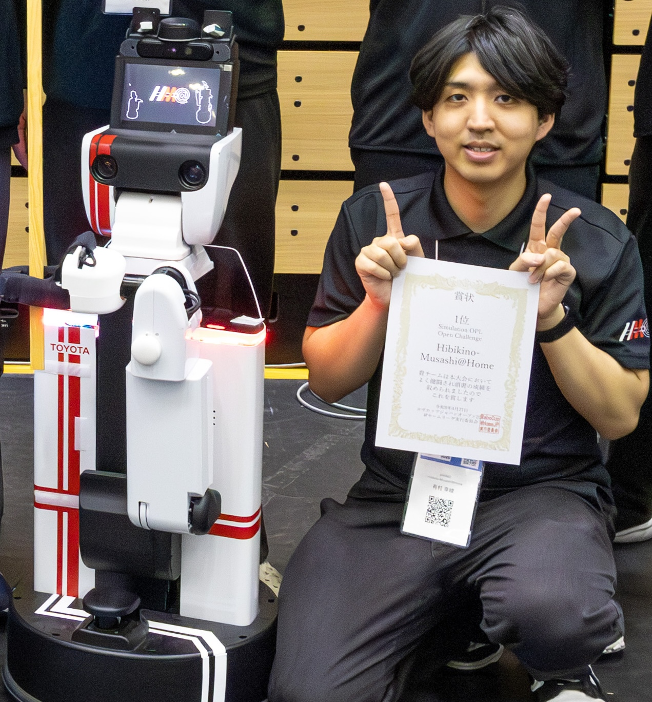
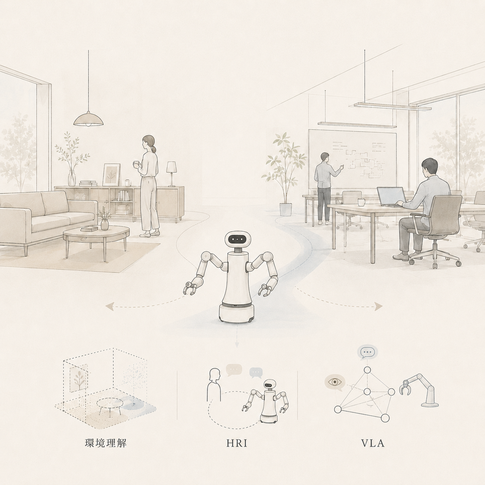

Doctoral Researcher
有村幸峻
Exploring the intersection of life sciences and engineering —
one experiment at a time.
博士後期課程１年 / 九州工業大学生命体工学研究科

— Portrait, 2026
Koshun Arimura（有村幸峻 / Arimura Koshun）is a first-year Ph.D. student exploring the future of Physical AI.
I aim to build general-purpose robotic systems that integrate LLMs, VLMs, and VLAs to understand and act in diverse real-world environments.

Current Research
開かれた環境とは，物体の配置や人の行動，タスクの内容が事前に決まっておらず，状況が動的に変化する実世界の環境です．私は，このような環境に適応し，人と協調しながら柔軟に行動できるロボットの実現を目指しています．
そのために，環境理解，HRI（Human–Robot Interaction），VLA（Vision–Language–Action Model）を軸として，ロボットが周囲の状況を理解し，人の意図を汲み取り，視覚・言語・行動を統合して振る舞うための研究に取り組んでいます．基盤モデルをロボットシステムに統合することで，実世界で機能する Physical AI の構築を目指しています．
Education
九州工業大学大学院 生命体工学研究科
博士後期課程
九州工業大学大学院 生命体工学研究科
博士前期課程
九州工業大学 情報工学部 知的システム工学科
編入学・卒業
鹿児島工業高等専門学校 電気電子工学科
本科
Fellowship
JST次世代研究者挑戦的研究プログラム (SPRING)
採択
Service
RoboCup@Home Simulation Japan Open 2026
Organizing Committee
RoboCup@Home 2026【日本大会】
トヨタ車体研究所 ヒューマノイドG1 ハッカソン
RoboCup@Home 2025【日本大会】
WRS2025 Future Convenience Store Challenge
RoboCup@Home 2024【世界大会】
全日本ロボット相撲大会
ROBO-剣
RoboCup JapanOpen 2022【日本大会】— レスキューリーグ
アイデア対決・全国高等専門学校ロボットコンテスト
Let's talk — research, collaboration, or anything in between.
arimurakoshun523 [at] mail.kyutech.jp